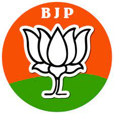
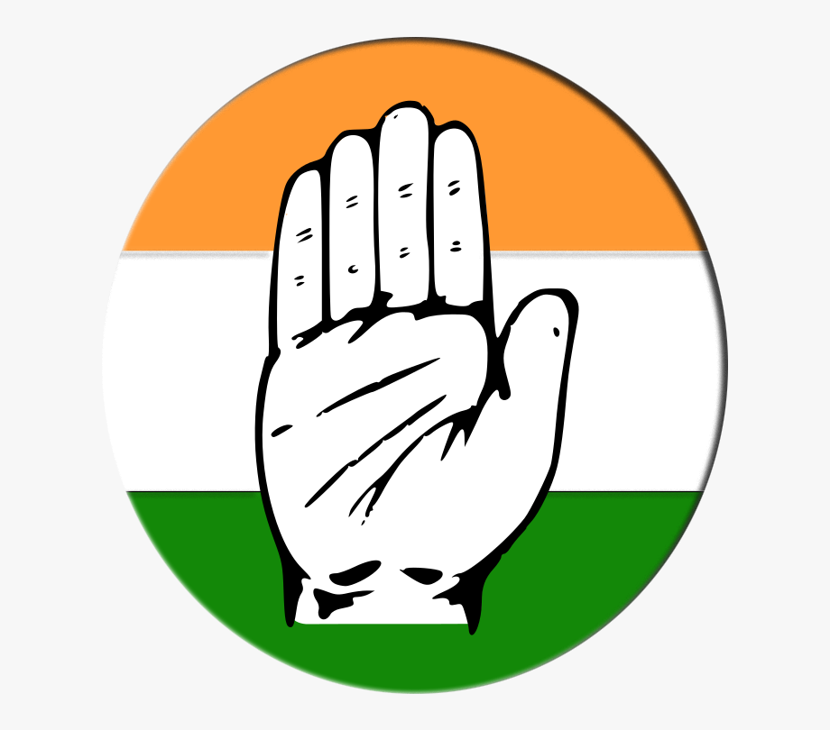
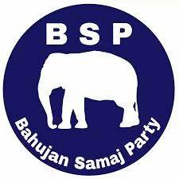
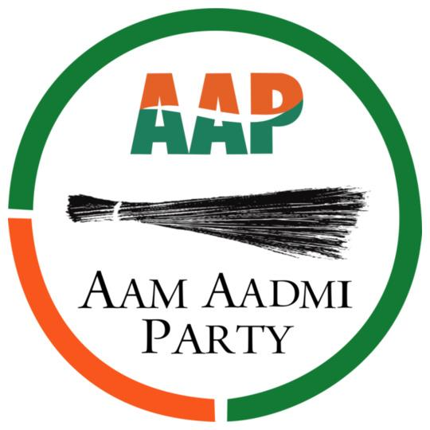
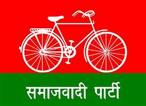
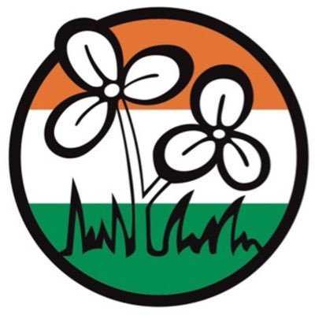

The Bharatiya Janata Party (BJP) is a pro-Hindu political party of India. It was founded in December 1980 by Atal Bihari Vajpayee and L K Advani, who were former members of the Bharatiya Jana Sangh (founded in 1951). The BJP is currently the ruling party of India, with Narendra Modi as the prime minister and Amit Shah as the parliamentary board chairperson. The BJP advocates the rebuilding of India in accordance with Hindu culture.The official philosophy of the BJP is "Integral humanism," a philosophy first formulated by Deendayal Upadhyaya in 1965, who described it as advocating an "indigenous economic model that puts the human being at center stage.

The Indian National Congress (INC), colloquially the Congress Party or simply the Congress, is a political party in India with widespread roots. Founded in 1885, it was the first modern nationalist movement to emerge in the British Empire in Asia and Africa.The Congress party emphasizes social equality, freedom, secularism, and equal opportunity.[13] Its political position is generally considered to be in the centre.[37] Historically, the party has represented farmers, labourers, and Mahatma Gandhi National Rural Employment Guarantee Act (MGNREGA).

The Bahujan Samaj Party (BSP) is a national level political party in India that was formed to represent Bahujans, referring to Scheduled Castes, Scheduled Tribes, and Other Backward Classes (OBC), along with religious minorities. It was founded in 1984 by Kanshi Ram, a member of the Dalit community. The BSP states that it represents the people at the lowest levels of the Hindu social system—those officially designated as members of the Scheduled Castes, Scheduled Tribes, and Other Backward Classes—as well as other religious and social minorities

The Aam Aadmi Party (transl.Common Man's Party) is a political party in India. It was founded in November 2012 by Arvind Kejriwal and his then-companions following the 2011 Indian anti-corruption movement.On 10 April 2023, AAP was officially granted the status of National party by ECI.The AAP's goal is to reverse the way that government accountability operates, and the party takes an interpretation of the Gandhian socialist concept of swaraj as a tenet. It believes that through swaraj, the government will be directly accountable to the people instead of higher officials.

Samajwadi Party (SP), regional political party in India based in Uttar Pradesh state. The SP was formed in 1992 in Lucknow, and it professes a socialist ideology. Influenced by the veteran socialist leader Ram Manohar Lohia (1910-67), the party aimed at “creating a socialist society, which works on the principle of equality,” and sought to mobilize the state's minority Muslim population and members of lower castes (notably those officially classified as Other Backward Classes) into a political force. Mulayam Singh Yadav was the party's founder and longtime president. The SP grew to become one of the largest regional parties in India

The All India Trinamool Congress (TMC) is an Indian national political party. It is mostly active in West Bengal. The party was founded in January 1998 by Mamata Banerjee.The TMC has been recognised as a national party by the Election Commission of India.Ma Mati Manush (Bengali: মা মাটি মানুষ) was primarily a slogan, coined by Mamata Banerjee. The term is literally translated as "Mother, Motherland and People".

AIMIM was originally founded as Majlis-e-Ittehadul Muslimeen (MIM) in 1927 by Nawab Mahmood Nawaz Khan Qiledar of Hyderabad State in the presence of Ulma-e-Mashaeqeen as a pro-Pakistan party. It is majorily works in Hyderabad and Telanagna. It also participates in State election of Uttar Pradesh & also in central But Failed to achieve any Height.

Janata Dal was an Indian political party formed through the merger of Janata Party factions, the Lok Dal, Indian National Congress (Jagjivan), and the Jan Morcha. It was formed on 11 October 1988 under the leadership of V. P. Singh.He united the entire disparate spectrum of parties ranging from regional parties,the Janata Dal (Secular) is a regional political party in India with its mass base in the states of Karnataka and Kerala. Its political position is centre-left, operating on the ideology of Social Democratic Secularism. It not only talks and tends to give rights to minorities but for every citizen of Bharat.